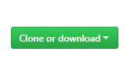

Capítulo 2 Git y Bookdown
2.1 ¿Cómo suscribirte a Git?
Para crear una cuenta en GitHub, ingresa al enlace siguiente https://github.com
1.- Ingresamos nuestro nombre de usuario, correo electrónico, contraseña y confirmamos contraseña.
2.- Una vez ingresado los datos, opriminos el botón “Create an account”.
2.2 Encontrar repositorio en GitHub
1.- Entrar en GitHub con tu cuenta.
2.- Colocar en el buscador synergyvision/colaboradores.
Donde synergy vision representa la organización y colaboradores es el repositorio a descargar.
3.- Ubicarse en 
4.- Hacer click y copiar el enlace para luego clonarlo en RStudio
2.3 Clonar repositorio en RStudio
1.- Abrir RStudio
2.- Colocarse en la barra de herramientas del lado derecho, hacer click a New Project
3.- Hacer click en Version Control
4.- Hacer click en Git
5.- En esta pantalla debes realizar 2 pasos y son los siguientes:
Copiar el enlace que traes de GitHub en Repository URL
En Project directory name, debe colocar el nombre del proyecto (Colaboradores) sin espacio ni caracteres especiales, prestando atención de la dirección donde se está guardando el proyecto (para ubicaciones futuras).
Hacer click en Create Project.
2.4 ¿Cómo trabajar en bookdown?
1.- Una vez descargado el repositorio, encontrarán entre los archivos una carpeta que se llama bookdown.
2.- En la carpeta bookdown se colocarán los capítulos generados para la creación de cada libro, las imagenes y datos referentes al mismo. Por ejemplo:
2.1. La numeración consecutiva de los archivos .Rmd es para que el archivo index.Rmd relacione los capítulos del libro, en este ejemplo existe un único capítulo que es “Git y Bookdown” (020-git.Rmd) y en él se encuentran todos los pasos que estás leyendo.
Si necesitas crear un nuevo capítulo debes generar un archivo.Rmd colocando una numeración consecutiva como por ejemplo 030-(nombre) y así sucesivamente.
2.2. Los archivos .yml generan la estructura que tendrá el libro por consiguiente no deben cambiarse.
2.3. La carpeta data debe contener archivos que guarden datos, los cuales pueden llegar a necesitarse para algún ejemplo o ejercicio a desarrollar dentro del libro, ejemplo un archivo.xls.
2.4. La carpeta images es para guardar las imágenes que serán usadas en el libro.
2.5. El archivo 010-introduccion.Rmd debe contener la introducción del libro. El archivo 400-apendice.Rmd, debe contener los apendices del libro y el archivo 500-references.Rmd, debe contener las referencias bibliográficas usadas.
3.- Generación de vista previa, en primer lugar se debe guardar los cambios realizados, luego abrir el archivo index.Rmd para generar la vista previa del libro y ver los cambios realizados. Se realiza de la siguiente manera
Esto debe generar un .html. A continuación se le presentará una vista previa
4.- ¿Cómo hacer commit?
Una vez realizado cualquier cambio en el libro es necesario guardarlos en el proyecto, para ello utilizaremos la herramienta .
4.1. Seleccionar los archivos modificados: en este paso solo se deben seleccionar la fuente trabajada (archivos.Rmd), imágenes, archivos de data. No serán seleccionar los archivos que se generan cuando se corre el libro (.html,.md, .json).
4.2. Hacer comentarios sobre los cambios realizados: aqui colocarán los cambios que se hayan hecho dentro del proyecto. Por ejemplo “creación bookdown colaboradores”.
4.3. Luego pulsar en Commit.
4.4. Pulsar push para subir los cambios del proyecto a la nube.
Observación: Este tipo herramientas facilita el manejo de un mismo proyecto entre varios colaboradores, pudiendo agregar cambio a un mismo archivo bajo las modificaciones ya hechas sin afectar el trabajo del otro. Lo primero que se debe hacer cuando se trabaja en este tipo de proyecto es Pull (bajar los cambios realizados, los cuales estarán montados en la nube), para no generar errores en los archivos.
Seguidamente se realizan los pasos 4.1, 4.2, 4.3 y 4.4 respectivamente.
En el recuadro inferior destacan dos colores donde rojo es lo que estaba descrito anteriormente y el verde es el que contiene los cambios.
2.5 Errores comunes
Un error que suele presentarse es cuando se quiere hacer Push de los cambios realizados sin haber hecho Pull antes en el inicio de la modificación del libro. Este se puede evidenciar al presionar Push de la siguiente manera
Lo primero que se debe hacer ante este error es pulsar Pull y resolver los conflictos presentados. Por ejemplo
Se debe ir al archivo que contiene el conflicto y eliminar los carácteres que fueron agregados, luego hacer Commit de las modificaciones.
Una vez solucionados los conflictos se procede hacer Push.